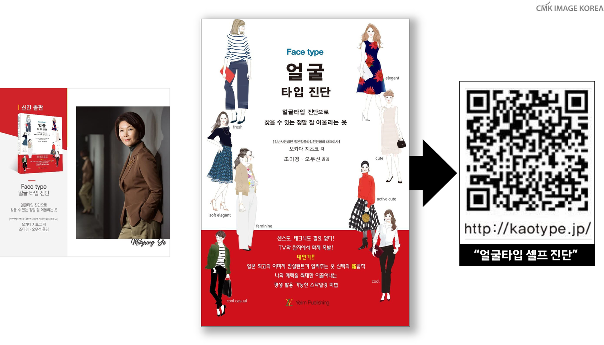
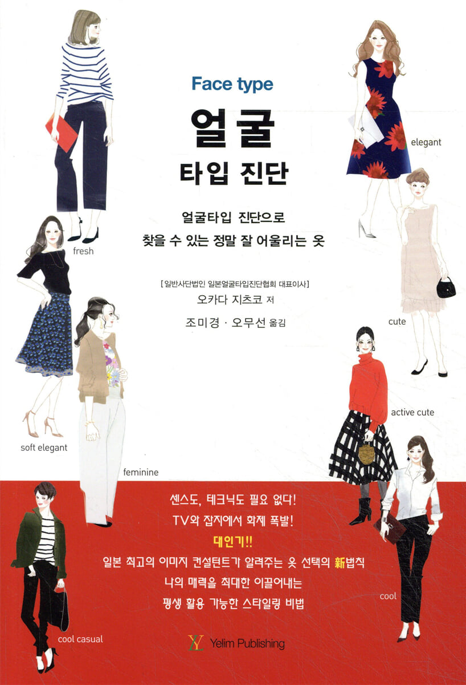
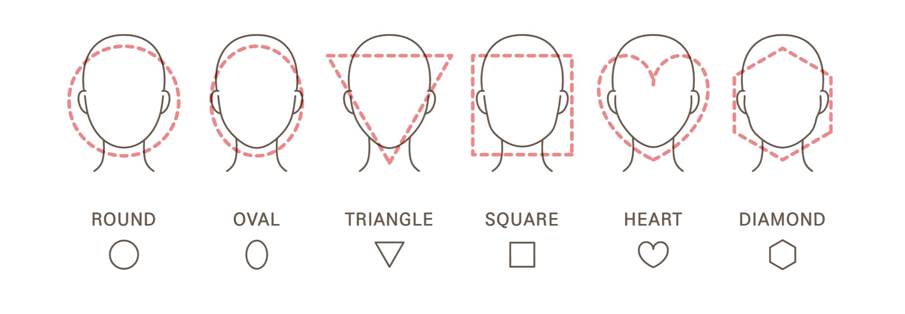

K-Beauty no longer imposes a single standard of beauty.
Across the 8 face types — set by the mix of generational feel (child vs. adult) and form (straight vs. curved) — the ideal makeup, hair, and style differ.
With the “Face Type Diagnosis” book and the QR code, you can diagnose your own face type.

Clothes that truly suit you, found through face-type diagnosis.
By Okada Jitsuko · translated by Cho Mi-kyung & Oh Moo-seon.
No trends, no techniques required.
Matching your own face type is a styling secret you can use for life.

